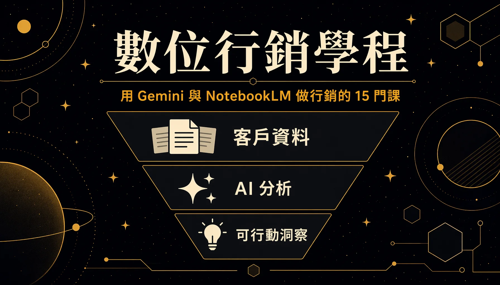

數位行銷學程是「Google 數位人才探索計畫」三學程之一，共 15 門課。教行銷人員如何在日常工作中使用 Gemini 與 NotebookLM，主要針對非技術背景的行銷人。其中 10 門有完整課程內容，多屬 Google 的短課，每門搭配一個動手挑戰，完成可拿徽章；另外 5 門是 Skillshop 的廣告與分析認證，在另一個平台手動完成。
這是 Google 數位人才探索計畫三篇學程紀錄的第二篇。計畫總覽在總覽篇，同系列另兩篇：AI 職場通識、Google Cloud。

# 學程在教什麼
學程的重心是把行銷工作裡最耗時的幾件事交給 AI：寫內容、找素材、做研究、整理顧客回饋、看競品動態。10 門有內容的課多和 AI 職場通識學程共用（例如 NotebookLM 那幾門），行銷學程把它們放進行銷情境重講一次。另外 5 門 Skillshop 認證則補上廣告與成效分析這塊，偏實務操作。
# 一、AI 基礎打底
- 生成式 AI：瞭解基礎概念 — 在使用 AI 前，需先理解其能力邊界與風險，包括 AI 與機器學習的層級關係、三種學習方式，以及基礎模型的六大限制與改善技術。對行銷人的意義是建立「為什麼 AI 會講錯、要怎麼讓它講對」的判斷力，例如用公司自有資料接地能減少幻覺。
# 二、用 Gemini 當行銷生產力助手
這群在學把 Gemini 變成可重複使用的內容與創意產線。
- Gemini Gems – Your Ultimate Marketing Sidekick — 建立客製化 AI 助理：設定人格、語氣、格式、目標四要素，訓練成「行銷分析師」「社群小編」等專家，建立後等同團隊延伸成員，餵同類資料免再交代背景。講者實例是用一個 LinkedIn Gem 每週以本人語氣產社群貼文、針對平台最佳化又省時。
- Content Generation with Gemini Made Easy — 在 Docs 側邊面板用 Gemini 發想、擬大綱、起草，產影片腳本、部落格文章與標題、網站文案；在提示詞引用 Drive 既有檔案讓草稿更貼情境。
- Become an AI Art Director for Your World — 在 Gemini app 用純文字指令當影像美術指導：多輪迭代編輯（AI 記住上次修改逐步疊加），以及影像混搭（把一張圖的風格顏色質感套到另一物件）。有效指令三要素是主體、構圖、細節，行銷人不必懂繪圖軟體就能改視覺素材。
# 三、用 Gemini 做研究與數據敘事
這群在學把耗時的人工研究與數據分析壓縮成幾分鐘。
- Supercharge Research with Gemini — 用 Deep Research 做競品稽核與市場研究，自動掃大量網站產結構化報告。三招提升品質：角色設定、輸出格式、來源指定；送出後可先檢視編輯研究計畫再啟動。
- Find the Story in Your Data — 用 NotebookLM 把原始調查數據變成有報導價值的故事：資料依據化、找標題、連點成線。提問帶身分與目的（如「身為公關，產生會吸引記者的主張」），跨題項找相關性挖隱藏洞察。
# 四、用 NotebookLM 做顧客洞察與競爭情報
這群在學把大量分散的文件用 NotebookLM 整合成可行動洞察，核心特性是只依使用者上傳的來源作答。
- Customer Insights with NotebookLM — 把大量客服通話與聊天逐字稿匯成單一 PDF 上傳（示範檔超過 500 筆、含所有支援語言），跨語言擷取顧客之聲；可依趨勢與可行動兩層次提問。深度對談是可語音即時追問的互動式 Podcast。
- NotebookLM for Market Research — 當 AI 研究與思考夥伴，三大流程：客戶回饋分析（依情緒主題分類找痛點）、市場與競品研究、內容發想與產製。Audio Overview 音訊摘要可通勤聽。
- NotebookLM for Competitive Edge — 競爭情報的四個步驟：蒐集公開資料、整合 YouTube 上的對手簡報影片、加入自家內部文件提供差異化脈絡，並萃取洞察（如產品發布、策略轉向、定位改變）。進階可生成 SWOT 分析，或轉為兩位主持人對談形式的 Podcast 供團隊同步。
# 五、用 AI 處理活動營運
- Streamline Event Planning with AI — 以 200 人主管離場活動為例，用 Gemini 貫穿地點主題發想、公平分組破冰、依航班時間排接駁車、活動後問卷分析。好提示詞的共通結構是規模加目標加約束條件加指定輸出；後勤類任務可同時給規則與最佳化目標讓 AI 取捨。
# 平台外的 5 門 Skillshop 認證
學程另有 5 門認證在 Google Skillshop 平台上完成，屬平台外的手動作業，內容偏廣告操作與成效分析。這 5 門在 skills.google 上看不到，要另外去 Skillshop 修：
- Google Analytics（分析）認證
- AI 技術輔助高效廣告認證
- 運用需求開發 創造需求並促成轉換
- 從業人員適用的 AI 技術輔助搜尋廣告基礎課程
- 策略專家適用的 AI 技術輔助搜尋廣告基礎課程
# 三個記憶點
- 將 500 多筆客服逐字稿（含多語言內容）在幾分鐘內轉化為顧客洞察 — 傳統方式需人工兩倍速聽 30 通電話，效率低且覆蓋率有限；NotebookLM 可將所有逐字稿匯成單一 PDF，進行跨語言分析，並生成可語音追問的 Podcast。這是學完馬上能對主管交出可行動結論的能力。
- 用外部公開資料加自家內部文件，直接產 SWOT — NotebookLM 能用 YouTube 整合吃下對手簡報影片，再把對手動態和自家產品文件並陳，產出對應真實市場情境的 SWOT，把「對手在做什麼」轉成「我方該怎麼應對」。
- 用 Gemini Gems 建立可重複使用的專屬行銷助手 — 透過一次性設定人格、語氣、格式與目標，即可打造一個能以使用者語氣撰寫社群貼文並針對平台進行最佳化的 Gem，後續無需再交代背景。這最能展現 AI 從工具變成團隊成員的轉變。